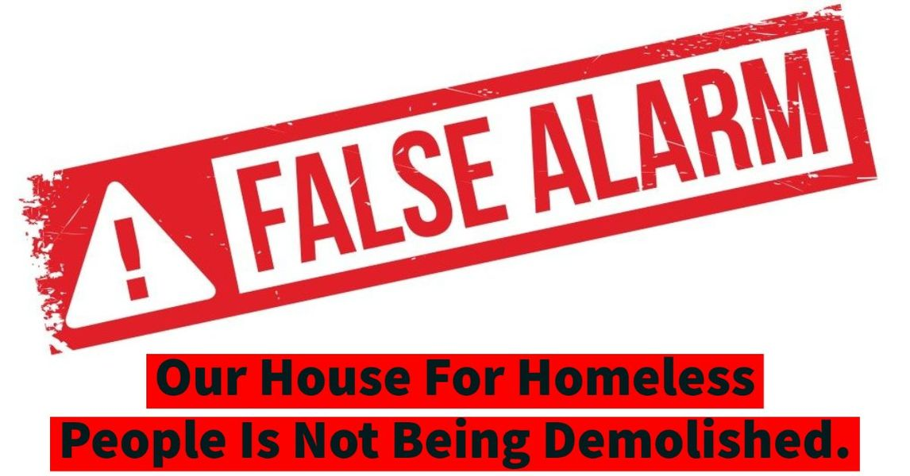

Timeline photos
I just got off the phone with Duane Groeger. He heads the Housing Compliance Division.
He just informed me that 85 Kent COURT is being demolished. Our house, 85 Kent PLACE is fine and has no infractions.
Here's how this all played out:
Yesterday I got a frantic text from Cadillac. He is a veteran who lives in our house. He said that a worker from the city came and took our trash cans. The worker told him that our house was being demolished.
So, I called the housing inspector office. I asked them if it was true. They said it was. I talked with the first person on the phone. And then I was transferred to the demolition department. She said it was true.
She also said that our house was condemned and no one was supposed to be living in the house at all. She said this order went out in January.
I HAD NEVER RECEIVED AN ORDER.
At this point my inner voice of what a total loser I am started kicking in. I had lost the mail that said our house was condemned. I can't even keep a house running. The city is targeting me and is going to start taking all my properties.
My wife, who suffers from lupus, started to crash mentally over this news. We had some very dark and depressing conversations yesterday.
I am behind on my water bill. It's been about $350 a month. I have one paying tenant. Everyone else in the house lives for free. I house the most challenging people to house. The only way I can afford to keep this house running is because of you and your contributions.
I thought they had taken our trash cans because I was behind on our water bill.
AND THAT BRINGS ME TO YOU.
I am in love with you all. You are the goodness in the world that keeps me pushing forward. I don't think I could or would do this work if it were not for you. Your goodness deserves more good leaders. The compassion and generosity you show to me and our homeless neighbors is overwhelming. You mean so much to me.
I AM DEEPLY TRULY SORRY for causing you to worry about this.
When I post bad news like this I try to make sure I have my facts correct. The city worker who took our trash cans said the house was going to be demolished. 2 people at the housing inspector office said the house was going to be demolished.
So I felt like I had covered my bases to tell you this disheartening news.
IT WAS A CLERICAL ERROR.
I know the house at 85 Kent Court very well. I have many friends that have lived in that house. A couple people recently went to jail because they were still living in the house even though it was condemned. They literally had nowhere else to got. But this is a story for another time.
Duane Groeger said that our house has no complaints on it. Our house: 85 KENT PLACE is fine.
They are bringing back our trash cans. Apparently they don't take cans because you are behind on payments. They think that the sanitation department got the wrong house. They probably thought they were at 85 Kent Court. But they were actually at 85 Kent Place.
I've paid $500 on our $900 water bill. They only required $350 to keep the water on. They just sent me a form that maybe can get me some water credits in the house because I fixed 3 leaks last week. Maybe that will help. But we give out a lot of water to homeless people. I'm not holding my breath for a lower water bill.
I take you on these emotional journeys because we must look at AND FEEL the hard truths of 21st century Akron. But I don't toy with your emotions flippantly. Life is hard. You don't need another person on Facebook making it harder.
I felt like I checked with enough sources to get you the truth. It was just a clerical mix up.
I'm sorry. I don't know how I could have done better in this situation. But I'm sorry.
AND TO MY WIFE...
Good god, honey. I'm so sorry for the stress I put you through.
You often say that you knew exactly who you married. You didn't want the safe bet. (She married a musician. She is now married to an activist. It's a line that makes sense when you look backwards. But it's not a line that either of us would have anticipated in our early 20s.)
I don't intentionally take you on wild rides just to cause you stress and worry. But sometimes we find ourselves on roller coasters that are a little hairy.
I love you more than anyone. You keep me stable and semi-grounded. You are everything to me.
I hope you are doing OK today.
I love you,
Sage